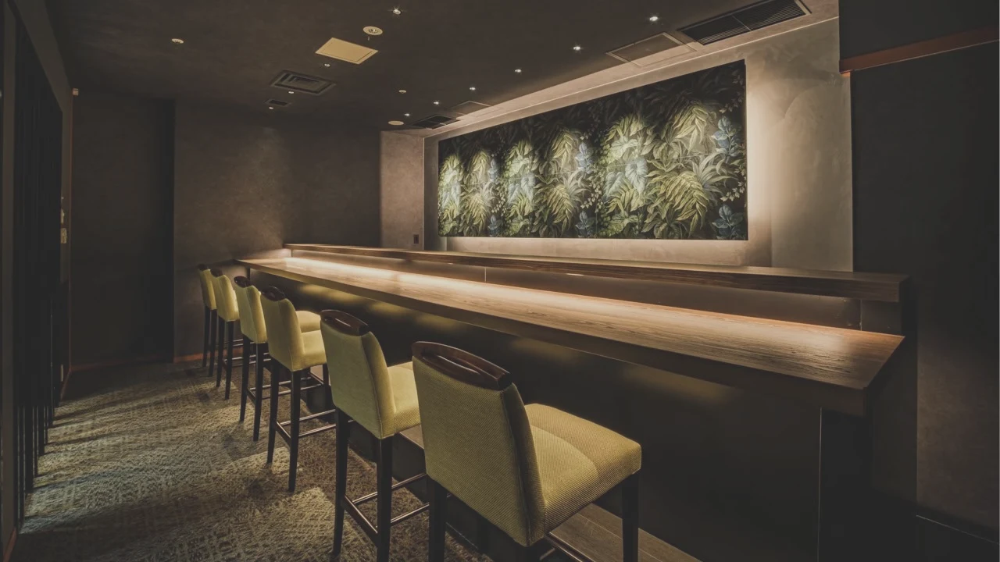
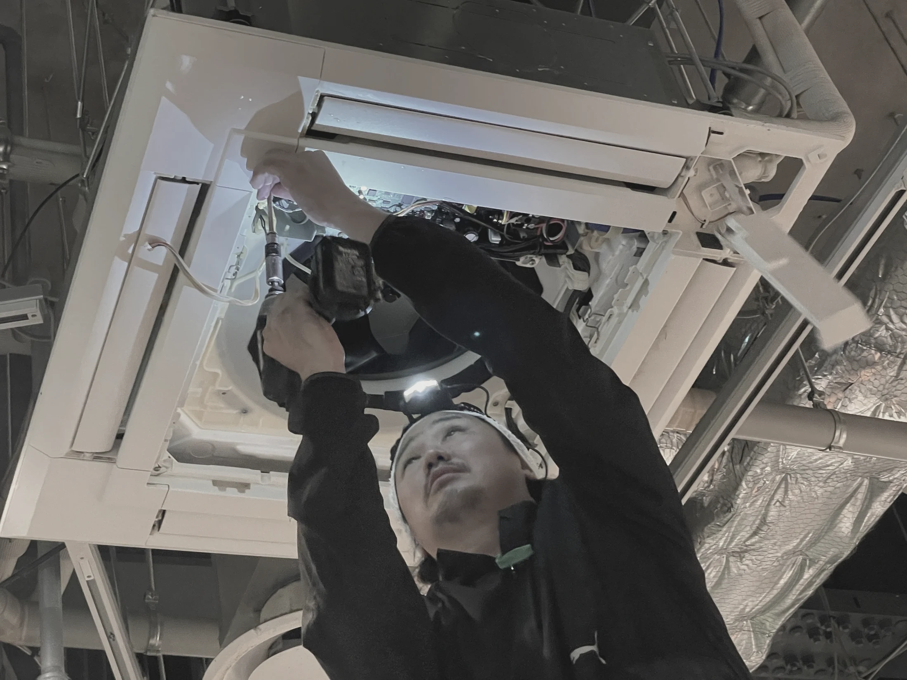
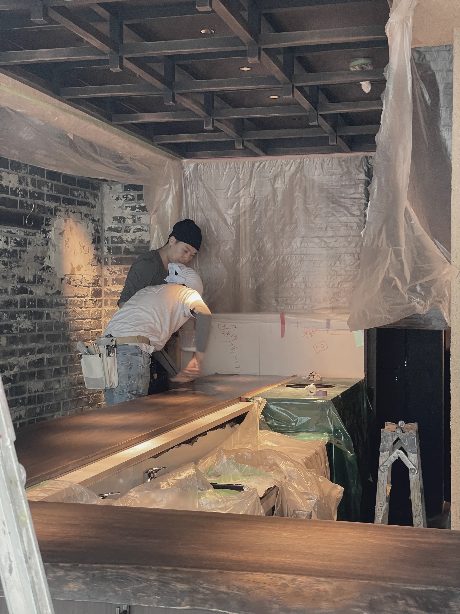
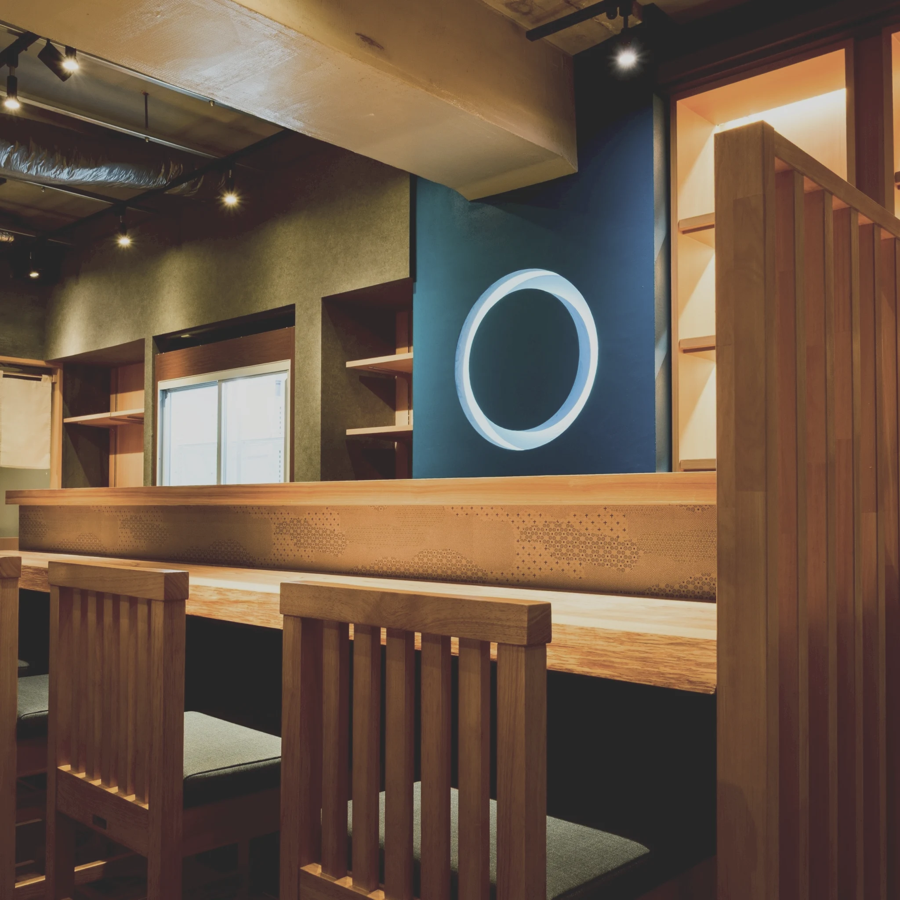
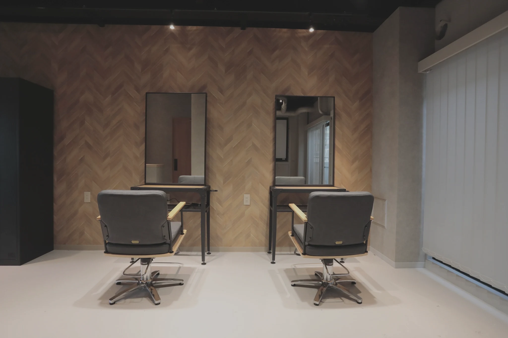
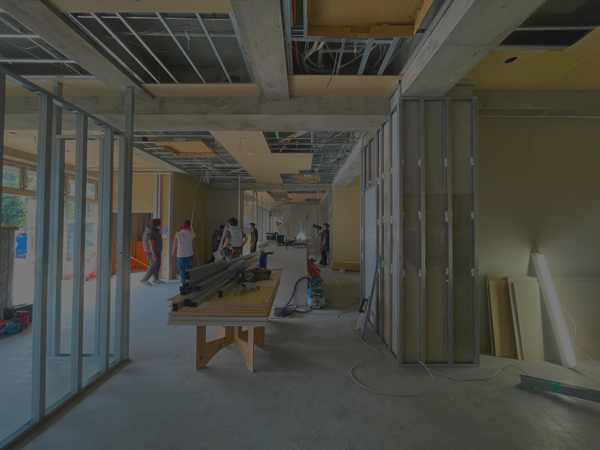
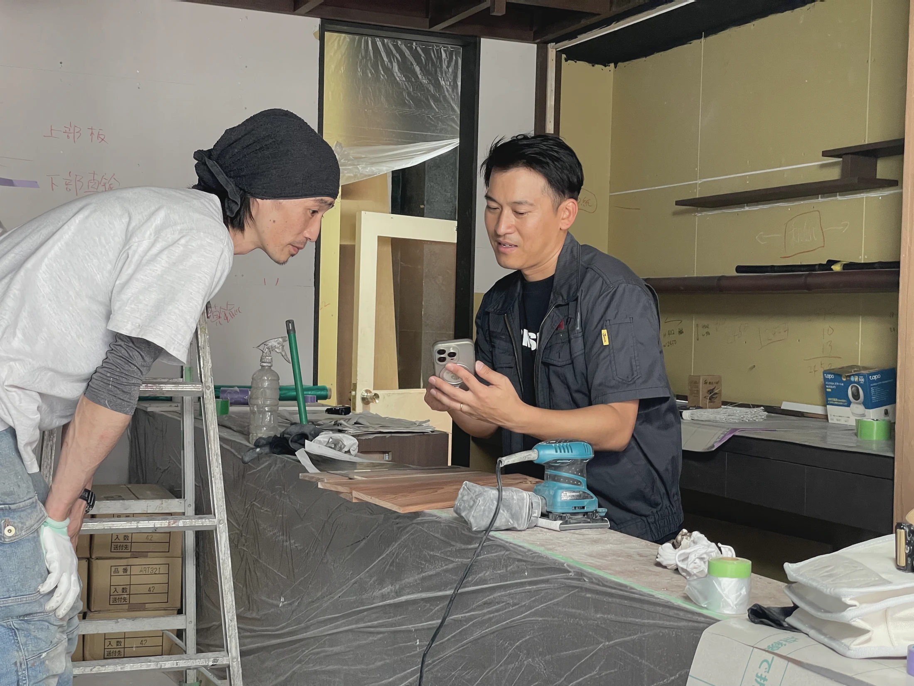
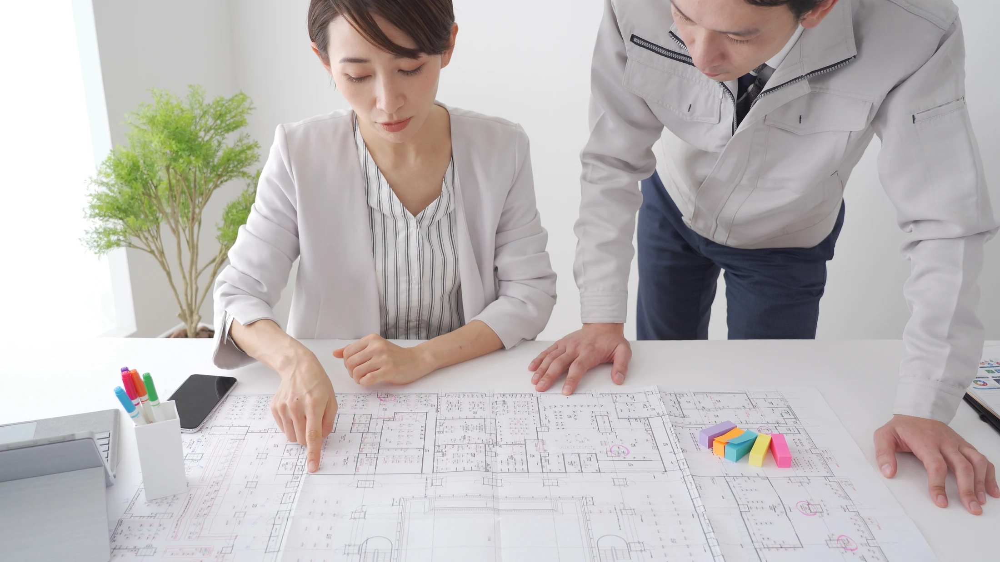
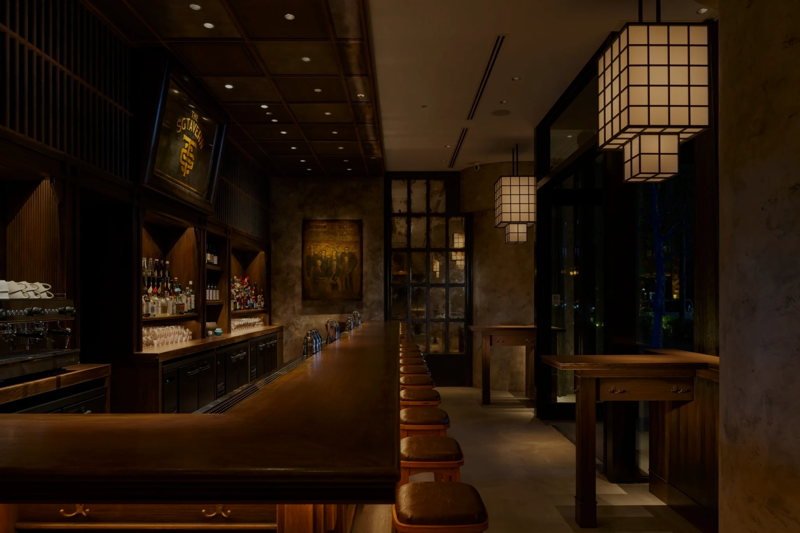
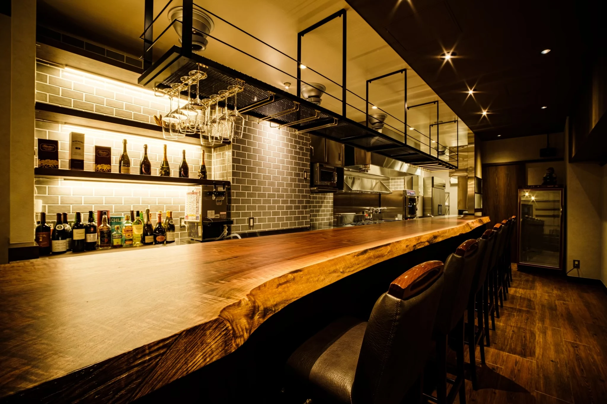

現場管理者（施工管理）
定員 2名店舗内装・施工管理の経験を活かし、
工程・品質・安全・コスト・職人調整を担う。
活かせる経験
工程管理 ／ 現場判断 ／ 協力会社との連携
飲食店・店舗内装の施工管理
契約から施工、そしてお店が動き出すまで。
AITYマネジメントの採用サイトへようこそ。
ヒアリング、現地調査、設計理解、職人連携。
空間づくり全体に関わりながら、現場を完成へ導いていく。
“作業” ではなく、空間を成立させる仕事です。

物件契約の相談、レイアウト検討、見積もり、
協⼒業者の調整、現場管理、引き渡しまで。
飲食店がオープンするまでに必要なことを、
一貫してコーディネートします。

厨房専門の社員も在籍し、
給排水・電気・換気・消防設備、
保健所や消防への申請対応まで
“思ったのと違う” を、つくらせません。

Speed・Quality・Communication を重視した、
特命形式の施工。
職人・協力会社・施主をつなぎながら、
案件全体を前に進めます。

飲食店を中心に、さまざまな店舗・商業施設の
空間づくりに携わっています。
空間ごとに求められることが違うから、
毎回が新しい仕事です。

手がける空間は、飲食店だけではありません。
美容室や保育園など、人が集まるさまざまな
場所づくりにも携わっています。
空間ごとに、求められることも違います。

その仕事をしているのが、AITYマネジメントです。
飲食店や物販店、美容室などの内装工事に携わり、
協力会社と調整しながら、
現場をつくり上げてきた経験を大切にしています。
指示を待つのではなく、自ら課題を見つけ、判断し、周囲を巻き込みながら動く。
あなたらしく今まで培って来た経験を、
AITYマネジメントで存分に発揮してください。
飲食店や物販店、美容室などの内装工事に携わり、
協力会社と調整しながら、現場をつくり
上げてきた経験を大切にしています。
指示を待つのではなく、自ら課題を見つけ、
判断し、周囲を巻き込みながら動く。
あなたらしく今まで培って来た経験を、
AITYマネジメントで存分に発揮してください。
Construction Manager


Construction Director
ONBOARDING / CAREER
未経験の方は、先輩社員とのOJTを通じて仕事を覚えていただきます。
AITYマネジメントでは、分からないことを一人で抱え込まず、
社長や先輩に相談しながら成長できる環境です。
ENVIRONMENT
詳細は面接時に詳しくお伝えします。
東京都内各現場
渋谷オフィス
花小金井拠点
フレックスタイム制。
現場管理は8:00〜17:00が基本
土日祝休み
年末年始休暇
有給休暇
経験・能力を考慮。
賞与年2回＋決算賞与
社会保険
交通費全額
人間ドック年1回
合格時の費用負担
学校・講習費用の補助
直行直帰可。
担当案件に応じて相談可能
社長・社員・現場との
距離が近く、相談しやすい

AITY MANEGEMENT TEAM
施主、デザイナー、職人、設備会社。多くの人と声をかけ合い、
確認しながら、一つの店を形にしていきます。
FAQ
はい、未経験の方もご応募いただけます。入社後は先輩社員と一緒に仕事を進めながら、必要な知識や業務の流れを覚えていただきます。
これまでのご経験に応じて、担当する業務を決めていきます。未経験の方は先輩社員のサポートから、経験のある方は培ってきたスキルを活かせる業務からスタートします。
応募にあたって、必須の資格はありません。資格をお持ちでない方もご応募いただけます。
現場や案件の状況により異なりますが、月平均残業時間は、10時間程度です。
現場は東京23区内を中心とした都内エリアが中心です。打ち合わせや社内業務、現場対応の内容により、渋谷または花小金井で業務を行う場合があります。
はい、直行直帰が可能です。担当する現場や業務に合わせて、出退勤の方法を調整しています。
はい、性別を問わず活躍できる仕事です。ご自身の経験や強みを活かしながら、店舗づくりに携わっていただけます。
はい、会社見学が可能です。ご希望の方は、採用担当者へお気軽にお問い合わせください。

CONTACT
サイトだけでは、現場の雰囲気や働く人のことはすべて伝わりません。
「どんな人が働いているのか」「どんな仕事をしているのか」「自分にもできそうか」
気になる方は、会社見学・お問い合わせからでも⼤丈夫です。
サイトだけでは、
現場の雰囲気や働く人のことはすべて伝わりません。
「どんな人が働いているのか」
「どんな仕事をしているのか」
「自分にもできそうか」
気になる方は、
会社見学・お問い合わせからでも⼤丈夫です。